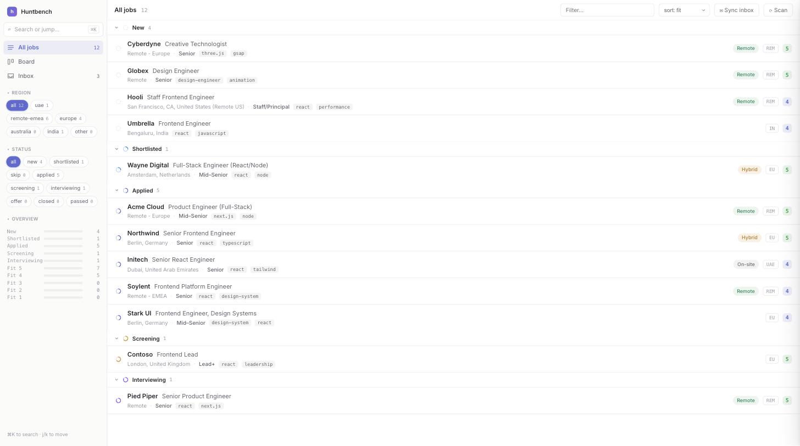
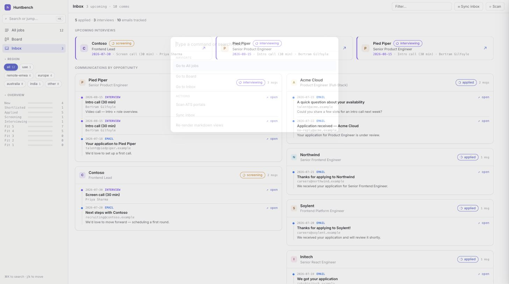
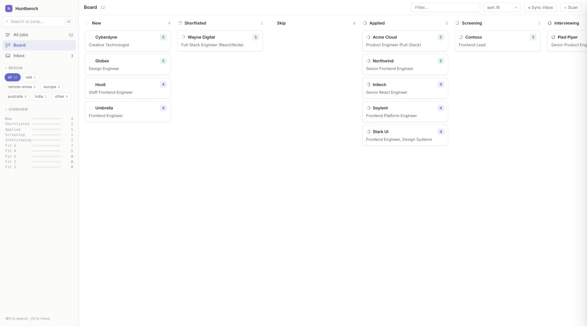
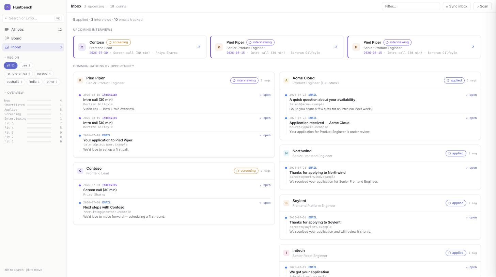
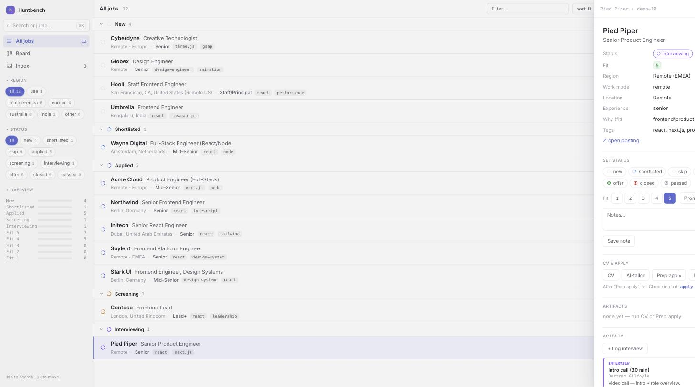

A tiny, dependency-free toolkit and a beautiful local dashboard for running a serious job search. Discover roles, score them for fit, track your pipeline, tailor CVs, and keep every recruiter email in one place — driven by your own coding agent.
git clone …/huntbench && python3 jobsdb.py serve

Huntbench is the deterministic engine and the local UI. Your coding agent — Claude Code, Codex, Cursor — does the finding, tailoring, and form-filling using tools you already have. Nothing phones home.
One command. python3 jobsdb.py serve opens the dashboard with a live demo dataset — no install, no signup, no keys.
Open the folder in your agent. It reads AGENTS.md, interviews you, and writes your profile and master CV. The dashboard detects it and you're in.
Scan ATS boards, triage the pipeline, generate tailored CVs, and prep applications — your agent fills forms and stops before submit for your review.
A light, Linear-style workspace — a status-grouped list, a drag-to-move board, and an inbox that turns recruiter email into a timeline.
Every role lands with a 1–5 fit score from your target roles and title filters. Rows carry the seniority, stack, location and work-mode at a glance — grouped by status so you always know what's next.

A Kanban board with a column per stage — New, Shortlisted, Applied, Screening, Interviewing. Drag a card to move it; the fit badge and company travel with it. It's the same pipeline, seen the way you think about it.

Sync your inbox and each application email becomes a card — grouped by opportunity, not by time. Upcoming interviews sit up top with the date, stage and interviewer. Every card deep-links back to the real thread.

Open any role to a slide-over: status, fit rating, notes, and a CV & Apply panel. Render a clean, ATS-safe CV from your master, let your agent reshape it to the posting, then build an apply packet — mapped fields plus drafted answers, ready for the browser.

No SaaS, no lock-in, no telemetry. Just files you own and a toolkit that gets out of the way.
Pure Python 3 standard library. No pip, no node, no build step. Clone and run.
Ships with an AGENTS.md playbook so Claude Code, Codex or Cursor knows exactly how to drive it.
Binds to 127.0.0.1 only. Your pipeline, profile and CVs are plain local files — nothing leaves your machine.
Pulls live openings straight from Greenhouse, Ashby, Lever, Workable, Recruitee & SmartRecruiters — no LLM calls.
A polished web dashboard and a keyboard-driven terminal UI over the same NDJSON pipeline.
Free and open. Fork it, hack it, make it yours — the whole thing is a few readable Python files.
Clone it and serve. It seeds a small demo dataset so the dashboard is alive immediately — then open the folder in your agent and say “set me up” to make it yours.
Prefer to do it by hand? jobsdb.py setup scaffolds your config from the examples. Run doctor any time to check things over.
# 1 · clone & serve (demo data included) $ git clone …/huntbench && cd huntbench $ python3 jobsdb.py serve → dashboard at http://127.0.0.1:8765 # 2 · open in your agent, then say "set me up" # it writes config/profile.yml + master-cv.md # 3 · make it real $ python3 jobsdb.py reset --yes # clear demo $ python3 jobsdb.py scan # pull live jobs $ python3 jobsdb.py serve # triage them
Free, open source, and local. Clone it, point your agent at it, and run your search like a pro.